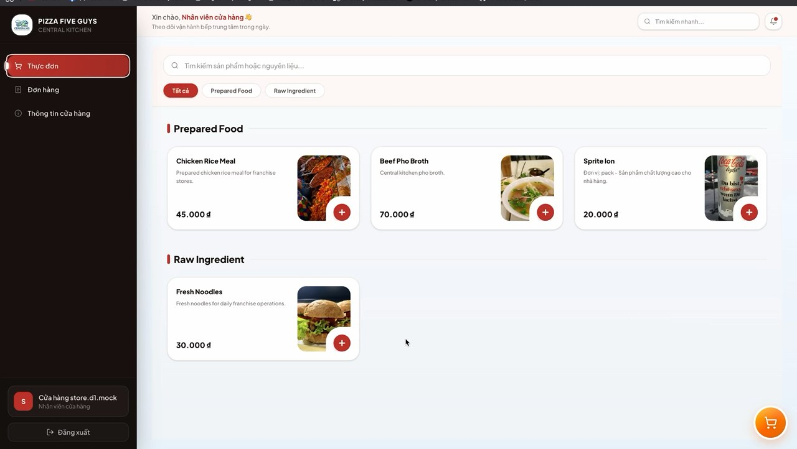
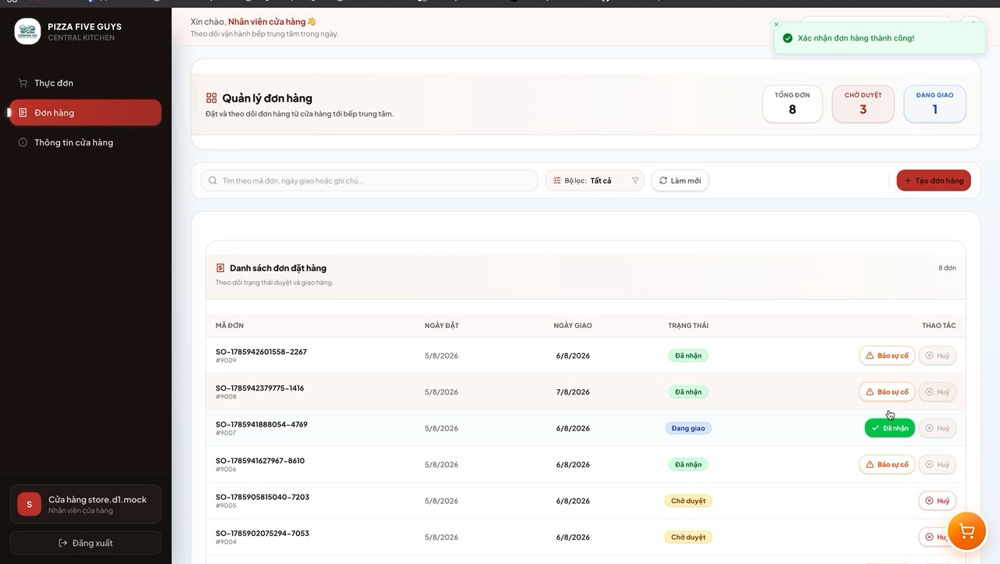
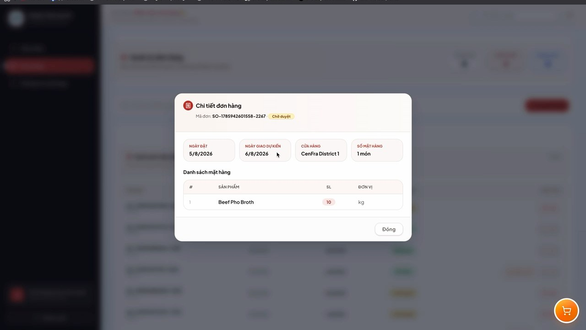
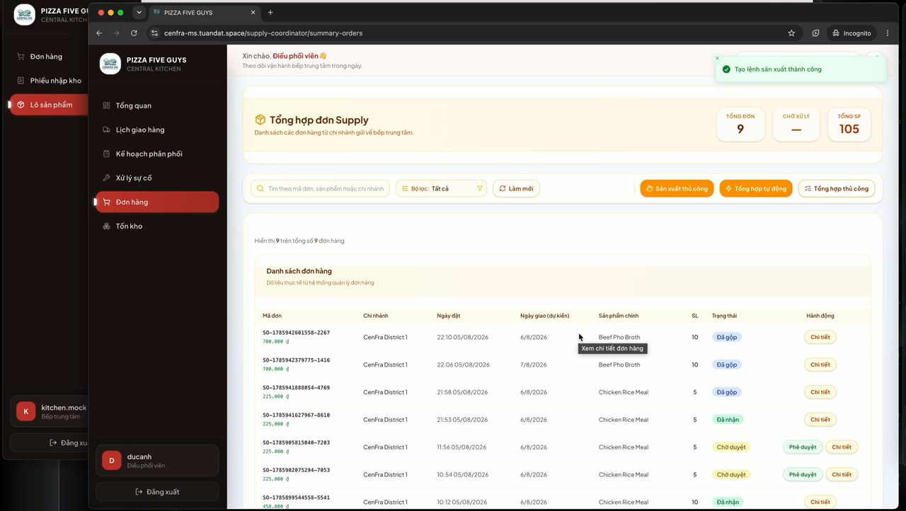
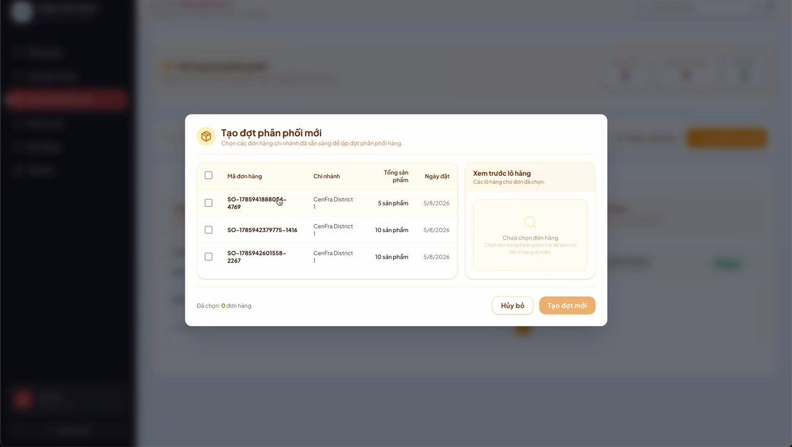
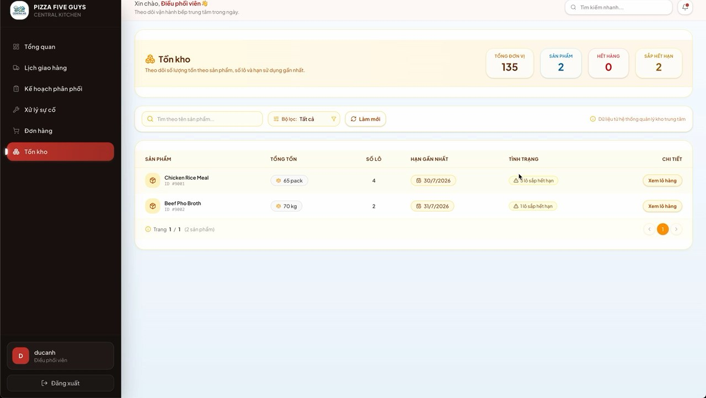

Menu Management
Prepared food and raw ingredient views for franchise ordering.
Project Detail
Central Kitchen System
Backend APIs for franchise ordering, food production, supply requests and store operations.
The Problem
Franchise stores and central kitchens need coordinated ordering, supply visibility and operational status updates across multiple roles.
The backend needed stable modules for production workflows, order tracking, issue handling and API contracts for frontend integration.
Project Interface

Frames extracted from the Central Kitchen product walkthrough video.
Operational Screens

Order Tracking
Store staff can review pending, delivered and in-progress orders.

Order Detail
Modal view for validating item quantities before status changes.

Supply Requests
Central kitchen can monitor request status, amounts and sources.

Create Supply Request
Store workflow for requesting stock with delivery dates and notes.

Stock Visibility
Inventory summary for supply planning and daily kitchen operations.
The Solution
The backend groups workflows into controller, service and repository modules, with documented REST APIs for frontend collaboration.
JPA/Hibernate and PostgreSQL handle relational persistence while Swagger/OpenAPI keeps endpoint contracts visible to the team.
Store Portal
Menu browsing, order creation, status tracking and issue reporting.
Spring Boot API
Order, supply, production and store operation modules.
Data Layer
PostgreSQL persistence through JPA/Hibernate repositories.